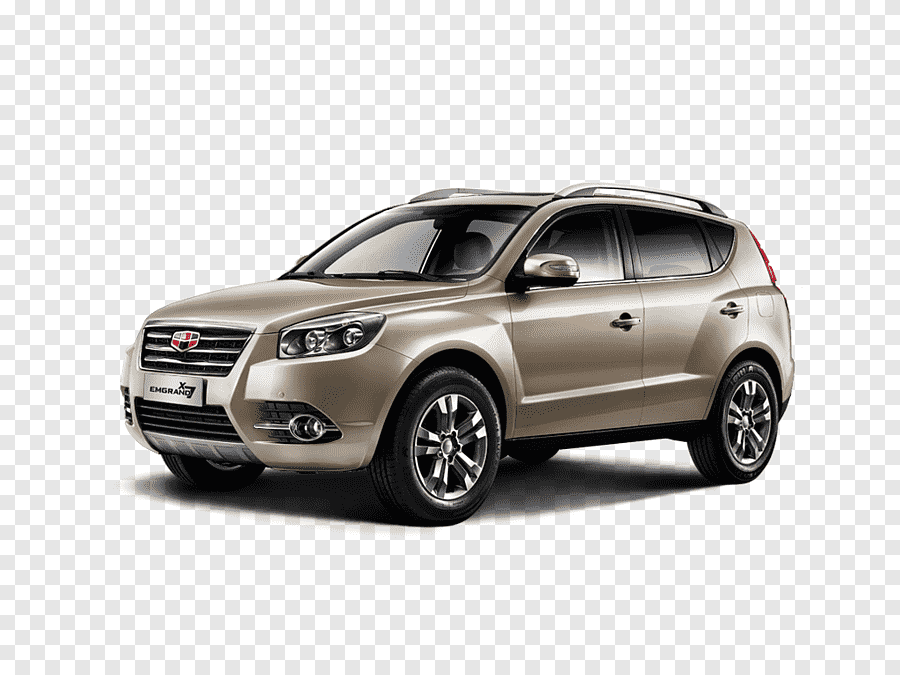
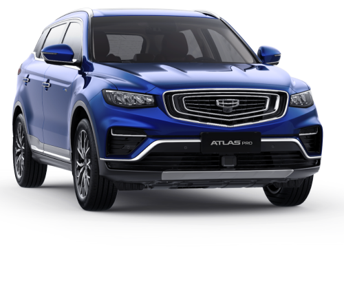
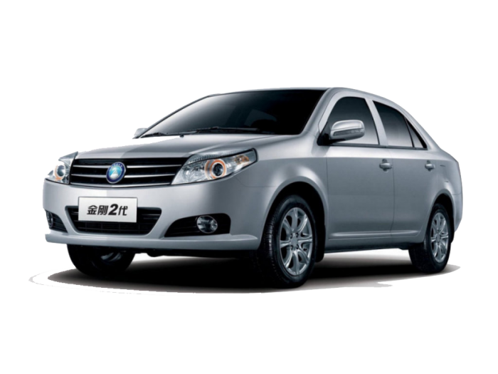
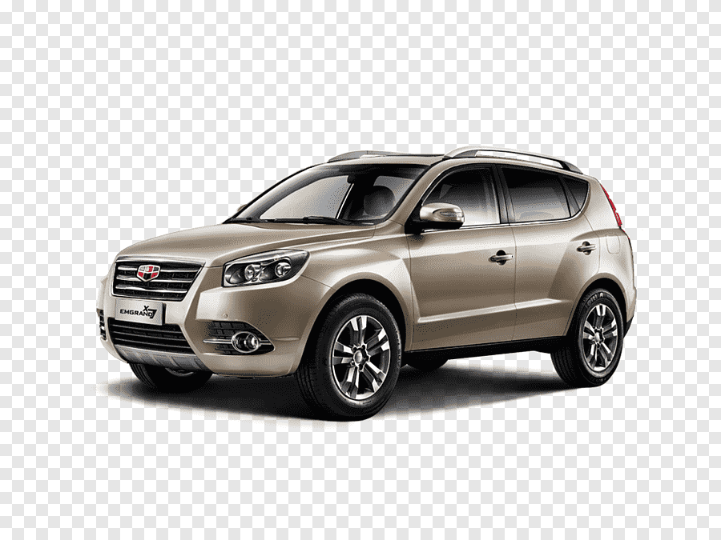
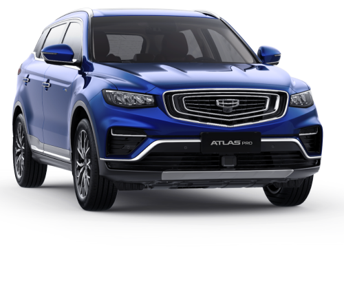
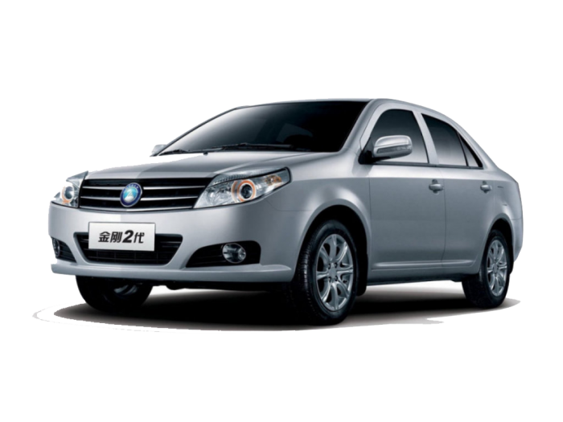

Каталог
Geely Coolray - компактный кроссовер, выпускающийся китайской компанией Geely Automobile с 2011 года. Впервые автомобиль был показан на автосалоне в Гуанчжоу. С 2013 года собирается на заводе БелДжи в Белоруссии
Geely ATLAS PRO - новый внедорожник для поклонников инновационно-технологического прогресса Geely ATLAS PRO обладает впечатляющим внешним видом, роскошным и продуманным до мелочей интерьером, широким спектром современных систем, отвечающих за комфорт и безопасность, а также инновационной силовой установкой, обеспечивающей отменную динамику, плавность хода и низкий расход топлива
Купе-кроссовер Tugella – премиальная модель в продуктовой линейке Geely по уровню дизайна, материалов, технологий. Она станет флагманом модельной гаммы Geely в России. Свое имя автомобиль получил в честь одного из самых крупных водопадов на планете - Тугела, расположенного в Южно-Африканской Республике. Неимоверной красоты водопад представляет собой несколько свободно падающих каскадов.
ФотоКаталог
 




